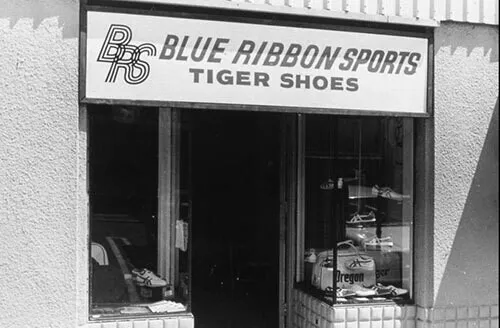

Історія бренду NIKE
Насправді, тоді, в ті роки – біг навіть не вважався спортом. На всіх бігунів дивилися як на диваків, які як божевільні спалюють енергію. Ніхто навіть і не чув про те, що біг може бути просто заради задоволення. А іноді над бігунами і зовсім люто насміхалися. Деякі водії, проїжджаючи повз, пригальмовували, виливали на голову банку пива і кричали в слід: “Знайди собі коня!”
І Філ Найт в 1963 році, коли йому було 24 роки, подумав, може є якийсь інший спосіб відчути те, що відчувають спортсмени, коли перемагають? Це привело його до божевільної ідеї. Найту дуже подобалися японські кросівки “Тайгер”. Він вірив, що вони зроблять революцію на ринку взуття в США.
У 1963 році Найт з’їздив до Японії, знайшов взуттєву компанію Оніцука, ту саму, яка робила ці кросівки. Він зустрівся з її керівниками, і на зустрічі перше, що вони у нього запитали: “Містер Найт, на яку компанію ви працюєте?”
Але у Найта не було своєї компанії, і він видавив: “Компанія Блю Ріббон!” І до цього додав: “В Америці весь ринок захопила adidas, але їх ціни дуже високі. Якщо зайти на ринок з цінами нижче, ніж у них, це буде дуже прибутково. Потенціал ринку мільйон доларів!»
Японці погодилися і відправили кілька зразків в США. Найт показав ці кросівки своєму тренеру з бігу Біллу Бауерману. Коли Бауерман побачив ці кросівки, вони йому відразу сподобалися, але ще більше йому сподобалася сама ідея бізнесу. Він з ходу увійшов в частку.
Перші продажі
Отримавши внесок від Бауермана в 1964 році, Найт тут же замовив ще відразу 300 пар кросівок на $1000. Коли посилка прийшла, він кинув роботу і почав пропонувати кросівки прямо в спортивні магазини. Після того, як Найт отримав відворот поворот в декількох магазинах, він почав пропонувати кросівки тренерам і бігунам прямо на спортивних змаганнях – і ось тоді замовлення полилися рікою!
Але раптово Найт отримав лист від продавця з іншого міста, який заявив, що насправді саме він є ексклюзивним партнером Оніцукі в Америці, звинуватив Найта в контрабанді і зажадав припинити продажі. Оницука чомусь не відповідала на листи і Найт був вже готовий визнати поразку і відмовитися від бізнесу.
Але він все ж узяв себе в руки і поїхав до Японії, щоб розібратися з ситуацією. Виявилося, що менеджер, з яким Найт спочатку укладав угоду, пішов з компанії. І Найт зустрівся з самим засновником компанії паном Оніцукою, переконав повернути йому права на західні штати і в підсумку врятував свій бізнес. Відразу, не відходячи від каси, зробив ще одне величезне замовлення на $30 000 і повернувся в США.
Вічно порожня каса
Найт кожен раз планував подвоювати обсяг продажів, але щоб так тиснути по газах, були потрібні гроші, а їх не було. І тому він брав все більш і більш великі кредити в банку, на що банкіри говорили: “Як може така маленька компанія рости так швидко? Якщо ти ростеш як на дріжджах, ти нарощуєш власний капітал, коли продажі ростуть, а в касі порожньо. Позабалансовий ріст небезпечний!»
У ті часи банки робили акцент на касових залишках. З нульовим балансом банк вважав Найта бомбою уповільненої дії – найменший спад, і Найт прогорить. Але для Найта це зростання було питанням життя і смерті, тому що інакше не переконати Оніцуку в тому, що саме він кращий за всіх. Тому Найт знову замовляв чергову партію товару, знову брав кредит, знову його гасив і повторював це знову і знову, подвоюючи обсяги поставок.
Справа ускладнювалася ще й тим, що Оніцука постійно спізнювалася з доставкою вантажу. Затримки забирали дорогоцінний час, що в свою чергу знижувало продажі, а значить і гроші на погашення кредитів.
Перші інновації
Тим часом робота кипіла в руках ще одного партнера бізнесмена – Джеффа Джонсона. Він трудився не покладаючи рук, продавав кросівки сім днів на тиждень. А коли продажів не було, окучував базу клієнтів, писав їм листи, створюючи у них відчуття, що вони особливі.
Деякі клієнти ділилися своїми проблемами, один, наприклад, поскаржився на те, що підошва амортизує недостатньо. Джонсон найняв шевця і переніс підошви з тапочок в Тайгери, і кросівки стали як ніколи супер м’якими і динамічними.
Тим часом Бауерман теж не відставав: він зауважив, що Тайгери погано підходили американцям — їх ноги довші, ніж ноги японців. І змоделював нову зручну модель.
Найт зберігав кросівки в підвалі свого будинку. Коли Джонсон досяг рекордного обсягу продажів в 3250 пар, підвал Найта став занадто тісним для бізнесу, і він орендував квартиру під офіс. А трохи пізніше вони нарешті відкрили свій перший магазин в Санта-Моніці. І Джонсон відразу перетворив цей магазин на рідкість в неймовірно затишне місце, де навіть можна було просто посидіти і поговорити.

Повернення конкурента
Тим часом конкурент, який один раз вже перехопив партнерство з Оніцуке, знову почав продавати кросівки Тайгер. Найт створив моду, а тепер суперник хоче скористатися плодами його праці.
Найт знову рвонув до Японії, знову просити зробити його ексклюзивним дистриб’ютором. Однак на зустрічі виробник заявив, що хоче мати більшого дистриб’ютора, такого, у якого є філії на східному узбережжі США. Найт знову схитрував, сказавши, що на східному узбережжі у нього вже є філії, і отримав ексклюзивні права ще на три роки.
Тут же прямо на переговорах Найт демонстративно зробив супер велике замовлення ще відразу на 5000 кросівок, замовлення, яке відправили в ту саму філію, якої у нього ще не було, як не було і грошей, щоб оплатити товар. До того ж він не знав, як же йому відкрити цю філію на східному узбережжі. Коли Найт повернувся в США, він відразу ж відправив Джонсона на схід, щоб він якомога швидше відкрив нову філію і прийняв там те саме велике замовлення на 5000 кросівок.
Кортес
Наступного року Бауерман розробив нову модель “Кортес”. Ця модель в 1967 році виглядала прибульцем з майбутнього: модель ідеально підходила для тривалого бігу, мала розкішну амортизацію і стильні обриси.
У тому ж році Бауерман випустив власну книгу про біг підтюпцем «джоггінг». Ця книга несподівано стала проповіддю для всієї нації, яка колективно валялася на дивані. Вона розлетілася тиражем в 1 млн примірників, і в підсумку змінила сенс слова «біг». Біг перестали сприймати, як заняття для диваків. Біг став супер крутою пристрастю.
Однак у книзі Бауерман жодного разу не згадав кросівки компанії, тому його бестселер навіть на саму малість не привів до зростання продажів. Тим не менш, завдяки новій супер моделі «Кортес» той рік завершився з хорошими показниками продажів в $84 000.
Найт наймав все більше і більше продавців – колишніх бігунів. Всі вони були дуже натхненні, оскільки їм подобалася справа і комісія “два бакси” за пару кросівок. Вони носилися по шкільних та інститутських змаганнях, і неймовірними темпами збільшували продажі.
Але Найт відчував біду. Від японців віяло якоюсь непередбачуваністю і підозрілістю. І тоді Найт завербував шпигуна, штатного співробітника Оніцукі, з яким познайомився в Японії.
Реклама
У 1968 році Блю Ріббон досягла обсягу продажів вже в $150 000. Незадовго до цього Wall Street Journal опублікувала статтю про компанію з фотографією Бауермана і Найта, на якій вони виглядали як ідіоти. Вони дивилися на кросівки так, ніби бачать їх вперше в житті. Завжди, коли справа доходила до реклами, підхід Блю Ріббон був примітивним і незграбним, як у слонів в посудній крамниці. Продовжувати і далі ігнорувати рекламу було не можна.
Тим не менш, бізнес продовжував зростання. 70% продажів серед бігунів в США були Тайгери. У якийсь момент Оніцука заявила, що це зростання – їх заслуга. І продовжила контракт не на п’ять років, а всього лише на три роки. Вони хронічно затримували поставки, а коли нарешті вантаж прибував, в ньому часто виявлялися не ті розміри взуття, а іноді і зовсім не ті моделі. Через це склад завжди був переповнений мертвим вантажем.
Настав момент, коли на чергову поставку на $20 000 не було грошей. Найту знову пощастило: він випадково натрапив на японський банк торгової компанії «Ніссо Іваї» з капіталом в $100 млрд. Ніссо подобалися швидко зростаючі компанії. і підприємець нарешті отримав свій довгоочікуваний кредит.
В цей же час Найт рознюхав від свого шпигуна, що Оніцука планує з ним повний розрив відносин. Вони почали працювати з іншими партнерами і вели полювання на нових кандидатів в США.
Залишатися поруч зі злом
У 1971 році вони вважали, що продажі повинні збільшуватися не в два, а в три рази. На одній із зустрічей з ними, на переговорах, під час перерви, Найт прямо з-під носа свого менеджера викрав папку з документами, в яких виявив, що крім нього, у Оніцуки є ще 18 інших партнерів в США. Але найцікавіше, всі ці партнери налаштовували Оніцуку проти нього.
А потім Оніцука і зовсім запропонувала Найту продати їм його бізнес, знаючи, що у нього просто немає іншого вибору. Найт сказав, що треба подумати, щоб відтягнути час, тому що йому все ще потрібен був постачальник, адже не можна так просто взяти і різко кинути клієнтів. Щоб виграти час, Найт розіслав всім конкурентам листи із погрозою, щоб на час вибити їх з сідла.
Логотип і назва
Щоб позбутися залежності, Найт знайшов для себе фабрику в Мексиці і замовив виробництво власних 3000 шкіряних бутс. Необхідно було потурати, щоб врятувати бізнес, але у Найта не було логотипу для взуття.
Він звернувся до молодої художниці Керолін Девідсон, яку до цього зустрів у Портлендському університеті. Найт попросив її зробити такий логотип, який би асоціювався з почуттям руху.
Через два тижні художниця принесла цілу папку начерків. Всі ці начерки були схожі на товсті блискавки, пухкі галочки, ожирілі загогуліни. Всі вони викликали тільки нудоту. Але був один начерк, який всім сподобався – найтовстіший. Він виглядав як крило, був схожий на свист розсікається повітря, ніби якесь завихрення залишилося після бігуна. Цей малюнок притягував увагу і виглядав як щось нове і свіже.
Логотип відправили на фабрику. Але ще потрібно було придумати назву. Команда Найта перебрала купу різних назв, витратили масу часу. І в останній момент подзвонив Джонсон і сказав, що посеред ночі прямо уві сні йому з’явилася назва — «Nike». Вона походила на ім’я Ніка – богині перемоги. Назва не особливо сподобалося, але думати більше було ніколи, тому вибрали його і відправили у виробництво.
Нові фабрики
Мексиканська фабрика підвела. Підошва кросівок тріскалася і не витримувала холоду. Була потрібна більш надійна фабрика. І в цьому допомогла Ніссо Іваї. Вони знали про багато хороших фабрик по всьому світу. Вони представили йому відразу п’ять фабрик з Японії. Найт приїхав на одну з них, показав працівникам свою козирну модель «Кортес», і пішов на обід, а коли повернувся, в конференц-залі на столі вже стояв свіжоспечений «Кортес». Магія – подумав Найт. На цей раз зразки були дуже хороші на відміну від мексиканського непорозуміння.
Коли Найт повернувся в Орегон, він зустрівся з Бауерманом. Вони помітили, що зовнішня підошва кросівок взагалі ніяк не змінювалася приблизно останні 50 років. Протектори завжди були однаковими, або хвилями, або канавками поперек стопи. А у такої підошви дуже слабке зчеплення з землею.
Бауерман звернув увагу, що у вафельниць для випічки незвичайна рифлена поверхня. Він викрав у дружини вафельницю і приніс в свій гараж, на аркуші з нержавійки вирізав дірки, точно такі ж як у вафельницях, Залив рідкою гумою і зробив зліпок. Зрештою у нього вийшли дві підошви, покриті товстими твердими гумовими шишками. Він пришив шишки до підошов кросівок, і дав бігуну. Той помчав набагато швидше.
Потім у Найта з’явився рідкісний шанс всьому світу показати кросівки Nike. У Чикаго в 1972 році проводилася виставка виробників. У підсумку результати цієї виставки перевершили всі очікування. Blu Ribbon мала оглушливий успіх.
Тим часом, Найт вклав гроші в кар’єру бігуна Стіва Префонтейна, учня Бауермана. У ті часи Префонтейн був суперзіркою. Куди б він не приїхав, навколо нього завжди збиралися натовп. Префонтейн завжди влаштовував з бігу видовищне шоу.
Префонтейн від імені Nike їздив по всій країні і відвідував всі спортивні заходи. Він проповідував Nike як Євангеліє і приводив тисячі новонавернених в магазин. А в 1972 він встановив новий рекорд США в бігу. І зробив це в кросівках Nike! Завдяки чому генерував тисячі доларів для компанії, перетворюючи Nike в символ бунтарства.
Суд
У 1973 році обсяг продажів виріс ще на 50% досягнувши $4,8 млн. У ті часи попит на кросівки постійно збільшувався. Весь світ раптом несподівано став жадібно вимагати кросівки, а у Nike, як завжди, були порожні полиці через затримки з поставками. При цьому Nike ще загрузла в кредитах.
Потім відбувся суд з Оніцука в 1974 році. На суді Оніцука оголосила, що Blu Ribbon обманом заманила їх партнерство, і що в 1962 році Найт прикинувся власником неіснуючої компанії, а потім вдався до хитрощів, крадіжок і шпигунства. Але в самій же Оніцука знайшовся чесний свідок, який повідав всю правду. У підсумку суддя оголосив вердикт на користь Філа Найта. Оніцука довелося відшкодувати збиток в $ 400 000 за нецільове використання товарного знака. А Найт зберіг всі права на свої моделі “Кортес” і “Бостон”.
Або ростеш, або вмираєш
Потім Найт вирішив деяку кількість кросівок випускати у себе в США. Він сповідував стратегію – ти або ростеш, або вмираєш. Навіщо замовляти кросівки на два мільйони, якщо попит на три? Найт був на волосок від прірви, кожен раз сплачуючи за рахунками в останню хвилину. З боку це здавалося нахабним і небезпечним способом ведення бізнесу, але попит завжди випереджав продажі.
Іноді платежі за кредитами були такими величезними, що якийсь час компанія опинялася повністю на мілині. Навесні 1975 року Найт виявив, що він заборгував цілий мільйон. І ніде поруч мільйона не виявилося. Не вистачало $75 000. Довелося вичавити до останньої краплі всі свої банківські рахунки з власних магазинів по всій країні.
Два дні по тому біля дверей фабрики в Ексетері зібрався натовп розгніваних робітників. Їх чеки відмовилися переводити в готівку в банку. Робочим нічим платити. А новий кредит банк видавати відмовився. Благо на допомогу прийшла Ніссо Іваї, і виплатила борг Найта.
Гарячі пиріжки
У цей час, завдяки вафельним підошовам, кросівки Nike розліталися з прилавків як гарячі пиріжки. Кросівки тільки з’явилися, але продавалися вже скрізь. Це означало, що Nike випередила Оніцуку і навіть Пуму.
У цьому ж році на відбірковому турнірі в Олімпійські ігри в Юджині, Nike отримала в призерах відразу трьох бігунів у своїх кросівках. Бренд Nike був чутний частіше навіть, ніж ім’я будь-якого спортсмена. Щоб продовжувати зростання, важливо було нарощувати виробництво, але американські фабрики були занадто дорогими, як і японські. Але зате тайванські фабрики активно розвивалися і шукали замовлення.
До кінця 1976 року Nike в черговий раз подвоїла обсяг продажів, дійшовши до $14 млн. Це помітили фінансові аналітики і написали про це в пресі. І, тим не менш, готівки у Nike як і раніше не вистачало. Найт продовжував позичати гроші скрізь, де тільки можна.
Дивні винахідники
А потім до Найта прийшла дивна людина з божевільною ідеєю. Це був космічний інженер Френк Руді. Він придумав, як в кросівки закачати повітря, щоб підвищити амортизацію. Це здавалося дурістю. За 200 років в дизайні взуття не було ніяких проривів, і важко було уявити, що можна придумати щось революційне. Тому куди б він не приходив, всі компанії відмовляли йому.
Але Найт вирішив спробувати, він вставив ці підошви в своє взуття і вони виявилися дуже хороші для бігу. Таким чином в 1977 році народилася легендарна модель Nike Air.
Потім в компанію прийшов ще один дивний винахідник – Сонні Ваккаро. Він винайшов гру “Даппер Ден Класик”, — це турнір, який став популярним серед американських шкіл, що дозволило Ваккаро поперезнайомитися з усіма тренерами. Найт прийняв його на роботу. І Ваккаро почав укладати контракти і прибрав до рук всіх тренерів і всіх іменитих гравців. Якщо раніше у всіх були контракти з adidas і Converse, то тепер всі носили тільки Nike. Ваккаро зламав баскетбольний ринок.
2 грудня 1980 року компанія стала публічною. Наступного тижня Nike оцінювався в $178 млн.
Символ непокори
У 1984 році Сонні Ваккаро наполіг на тому, щоб вкластися в баскетболіста Майкла Джордана. Однак Джордан не хотів підписувати контракт. Щоб його переманити, майстер переговорів Ваккаро сказав незвичайну фразу, яку тоді так ніхто і не зрозумів: «Ти сам станеш брендом, у тебе будуть кросівки імені тебе».
Ця фраза, чек на $2,5 млн і щедрий відсоток від продажів змусили Джордана передумати. Спеціально для нього в Nike розробили Іменні кросівки Air Jordan. Кросівки ідеально підходили для бічних нападників, які приземляються з триразовим навантаженням на стопу. Це диво взуття було чорно-червоного кольору.
Баскетбольна ліга порахувала такі кольори занадто помітними, а вчинок Джордана нахабним. Його оштрафували на $5000. Але Джордан продовжував одягати кросівки на кожну гру, а Nike охоче оплачувала його штрафи, ще більше привертаючи увагу до кросівок. Продажі Nike зросли з $ 870 млн до $4 млрд на рік.
Сама ідея того, що предметом реклами повинен бути не сам продукт, а ті, хто його носять, була революційною для тих днів. Дійшло навіть до смішного, на Олімпіаді в 1992 році на церемонії нагородження американської баскетбольної збірної золотими медалями Майкл Джордан і майже вся команда стояли на п’єдесталі, прикриваючи логотип Reebok. Тому що у них був контракт з Nike. Це стало шоком для спортивного світу: ніхто не очікував, що в спорті тепер все контролює бізнес.
На наступний рік Sporting News несподівано оголошують Найта найвпливовішою людиною в спорті. Вперше в історії це звання отримав не спортсмен, а виробник.
Вихід
У 2004 році Філ Найт пішов з посади головного керуючого і президента компанії Nike, але залишився почесним головою правління. І ось його порада:
“Шукайте своє покликання. Якщо слідувати покликанню, легше буде переносити втому, а невдачі будуть вас тільки підігрівати, а приплив енергії буде таким, якого ви ніколи не відчували. Ніколи не буває просто бізнесу. І ніколи не буде. А якщо буде, значить цей бізнес поганий”.
Порада здається очевидною, але Найт багато часу думав над загадкою, чому йому вдалося досягти всього цього. І прийшов до висновку, що всім просто подобалася історія звичайних хлопців з Орегона, схиблених на бігу.